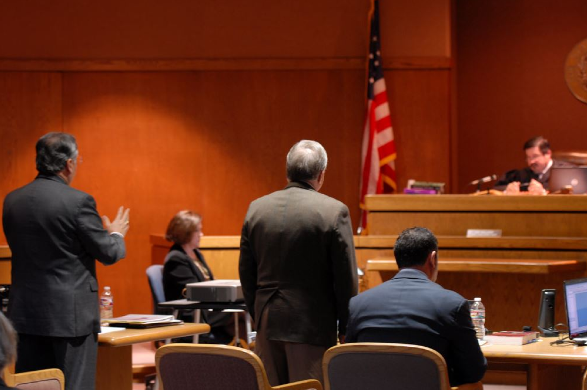

Donate
Donate
Donate
Donate

5 STEPS ON HOW TO ASK FOR A COURT-APPOINTED LAWYER
If you can’t afford to hire a lawyer, the best way to be sure you get treated fairly is to obtain a court-appointed lawyer from the courts.
1. Ask for a lawyer EARLY in the process.
The court system is complex and having a lawyer by your side as early as possible is important. Even if you just feel like you need someone to help explain what’s going on, ask for a defense lawyer early.
2. Ask to complete an official attorney request form.
This could be called several things, such as “Application for Appointment” or “Appointment Request Form.” Ask a court clerk for whatever official form the court uses to take requests.
3. Ask to complete a financial questionnaire.
Most counties will require you to submit a form that provides financial information showing that you can’t afford to hire a lawyer. Ask for this at the same time you ask for the attorney application form.
4. Have your supporting financial documents ready.
If possible, bring pay stubs, bank statements, and copies of your monthly bills to court when you ask for a lawyer. These documents help prove to the judge that you can’t afford to hire a lawyer.
5. Be Persistent.
Sometimes judges will put off your request, usually by telling you to try to hire a lawyer. If this happens, do not give up. Do not skip court because you cannot afford to hire a lawyer like the judge told you to. Keep asking for a lawyer and filling out the attorney application form every time you go to court.
MEET OUR TEAM:
TFDP Board of Directors
& Staff Members